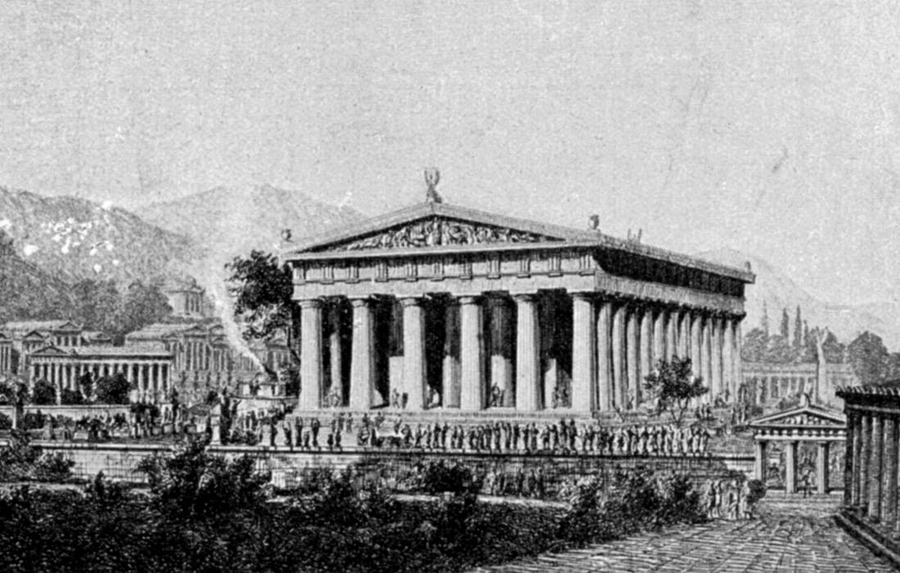
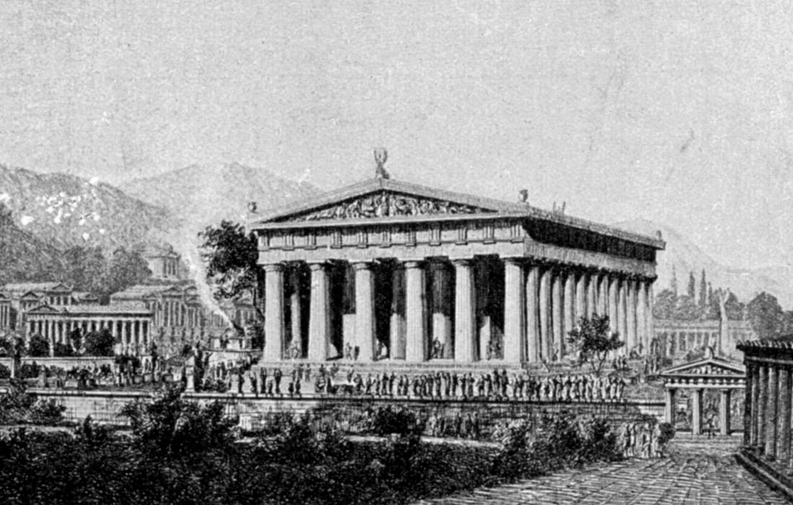

Creada por el escultor Fidias en el siglo V a.C., esta estatua representaba al dios Zeus
sentado en su trono, señala Iberoamericana. Según Britannica, fue una inmensa estructura
de 12 metros de alto revestida con placas de oro y marfil que se encontraba en el templo
de Zeus en Olimpia, la antigua ciudad griega donde se celebraban los Juegos Olímpicos.
Tal como indica la plataforma Britannica, “el descubrimiento en la década de 1950 de los
restos del taller de Fidias en Olimpia confirmó la fecha de la estatua en aproximadamente
el 430 a.C. El templo fue destruido en el 426 d.C., y la estatua, de la cual no sobreviven
copias exactas, puede haber sido destruida en ese momento o en un incendio en Constantinopla
(actual Estambul) unos 50 años después”.


 
